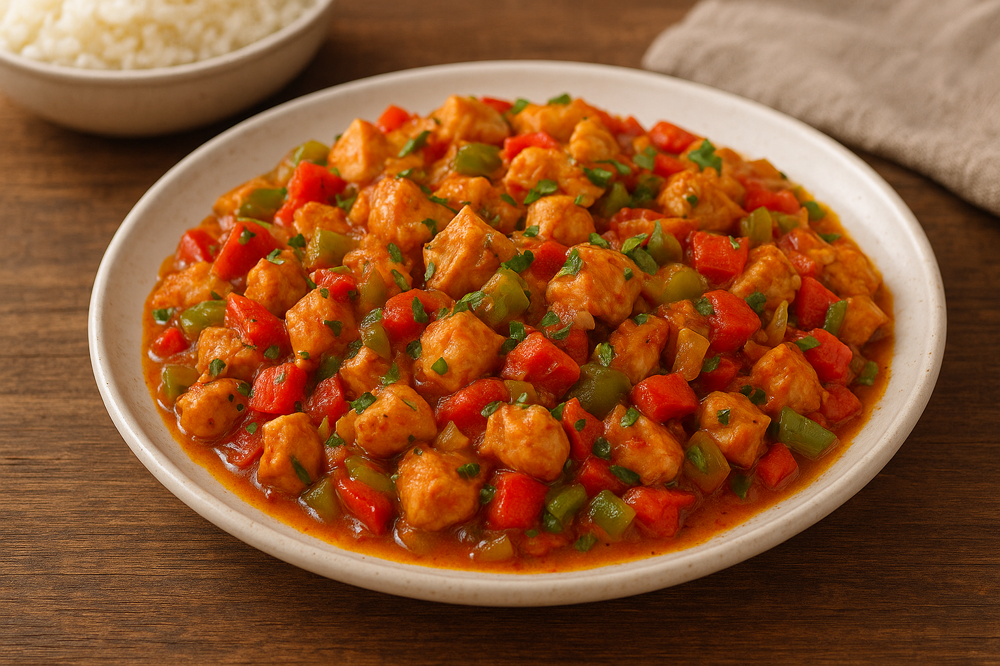

Yemek Tariflerine Hoş Geldiniz
Tavuk Sote
Malzemeler
- 500 g tavuk göğsü (kuşbaşı doğranmış)
- 2 yemek kaşığı sıvı yağ veya zeytinyağı
- 1 adet büyük soğan
- 2 adet yeşil biber
- 2 adet domates
- 1 tatlı kaşığı domates salçası
- Tuz, karabiber, pul biber
- (İsteğe bağlı) kekik, kimyon
Yapılışı
- Tavuk etlerini kuşbaşı doğrayın.
- Geniş bir tavaya yağı alın, kızınca tavukları ekleyip yüksek ateşte suyunu salıp çekene kadar kavurun.
- Yemeklik doğranmış soğanı ve biberleri ekleyip yumuşayana kadar soteleyin.
- Domates salçasını katıp kokusu çıkana kadar kavurun.
- Küp doğranmış domatesleri ekleyin, birkaç dakika pişirin.
- Tuz ve baharatları ilave edip karıştırın.
- Kısık ateşte 5-10 dakika daha pişirip ocaktan alın.
👉 Yanında pilav veya makarna ile servis edebilirsiniz.